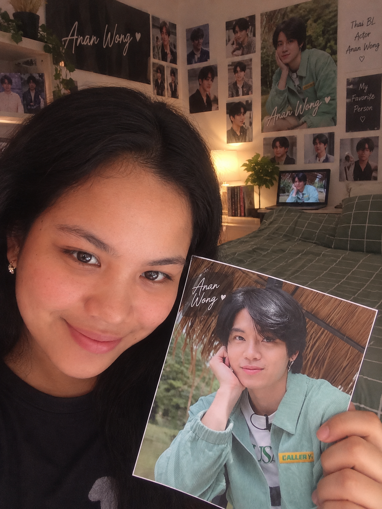

HOME | PROFILE | GALLERY | ABOUT | LAST PAGE
|
 |
About MeName: Kate Napatdan Program: BSIS (Bachelor of Science in Information Systems) Location: Miagao, Iloilo, Philippines BioWelcome to my profile page! I am an Information Systems student. This website is one of the passionste projects I have put together. I created this fan website to share my collection, showcase my favorite moments, and document my journey as a fan while practicing my web design skills. Interests
|